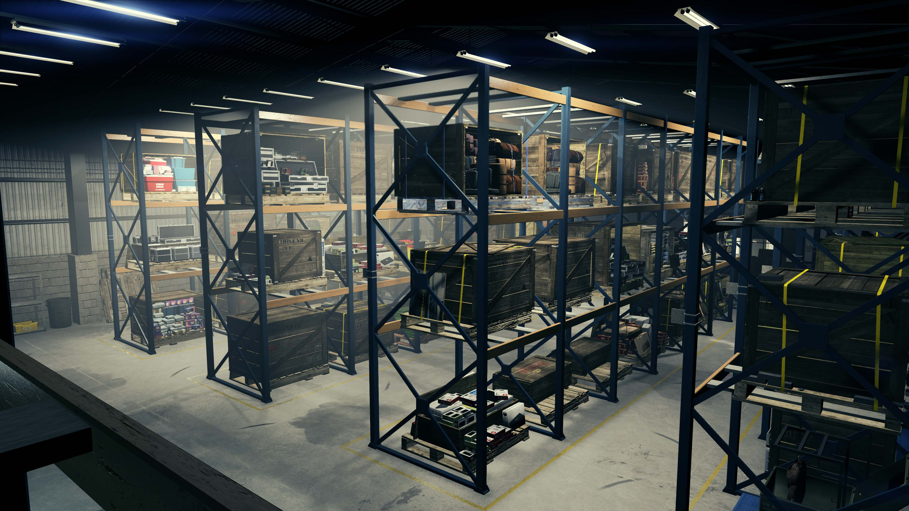

Офис и склады спецгруза
Какой офис купить?
Выбирать местоположение офиса стоит только по цене или отталкиваясь от того, в каком районе города уже куплена или будет покупаться большая часть недвижимоcти.
- Maze Bank, западное здание - 1 000 000 GTA$
- Lombank, западное здание - 3 100 000 GTA$
Какой склад спецгруза купить?
Малого и среднего складов будет более чем достаточно для соло фарма и покупать большой склад нет особого смысла.
На каждом складе будет стоять ящик с инструментами, с помощью которого можно модифицировать транспорт для продажи грузов. Тут есть смысл улучшать только двигатель Буксира - 170 000 GTA$.
- Малый склад - Гараж Уайт Видоу - 360 000 GTA$
- Средний склад - Derriere на Бэклот - 902 000 GTA$
Доходность складов
Ящики
Удобнее всего фармить покупая партии по 3 ящика, это самый быстрый и выгодный способ, если учитывать затраченное время и считать количество заработанных денег за 1 час игры, а ещё в таком случае может быть 2 только варианта доставки.
- на машине, что крайне быстро и удобно, времени уходит примерно 4 - 7 мин
- все 3 ящика отдельно, если имеется Oppressor MKII или любой летающий транспорт, то даже такой вариант не доставит неудобств, времени уходит примерно 8 - 10 мин
Чтобы заполнить малый склад потребуется 5 доставок по 3 ящика и 1 доставка 1 ящика. Чтобы заполнить средний склад потребуется 14 доставок по 3 ящика.
Ниже в таблице указана цена покупки и продажи ящиков при полном складе.
| Склад | Цена покупки | Цена продажи | Прибыль | Время |
|---|---|---|---|---|
| Малый | 92 000 GTA$ | 260 000 GTA$ | 148 000 GTA$ | ~ 40мин |
| Средний | 252 000 GTA$ | 714 000 GTA$ | 462 000 GTA$ | ~ 100мин |
Количество транспортных средств, используемых для продажи, зависит от количества продаваемого груза.
| Количество ящиков | Количество транспортных средств |
|---|---|
| 1-9 ящиков | 1 транспорт |
| 10-29 ящиков | 1-2 транспорта |
| 30 и более ящиков | 1-3 транспорта |
Редкий особый груз
Стоимость покупки такого груза выше, чем обычных ящиков, но продать его можно гораздо дороже при этом отдельно от всего остального груза на складе.
| Название | Цена покупки | Цена продажи | Прибыль |
|---|---|---|---|
| Редкие карманные часы | 30 000 GTA$ | 150 000 GTA$ | 120 000 GTA$ |
| Большой бриллиант 64 карата | 27 000 GTA$ | 135 000 GTA$ | 108 000 GTA$ |
| Украшенное яйцо “Яйцо Фаберже” | 25 000 GTA$ | 125 000 GTA$ | 100 000 GTA$ |
| Золотой пулемёт | 23 000 GTA$ | 115 000 GTA$ | 92 000 GTA$ |
| Редкий мех “Шкура Бигфута” | 21 000 GTA$ | 105 000 GTA$ | 84 000 GTA$ |
| Плёнка фильма | 19 000 GTA$ | 95 000 GTA$ | 76 000 GTA$ |
Общие траты и окупаемость
| Склад | Стоимость | Время |
|---|---|---|
| Малый склад - Гараж Уайт Видоу | 360 000 GTA$ | продать 2 полных склада |
| Средний склад - Derriere на Бэклот | 902 000 GTA$ |